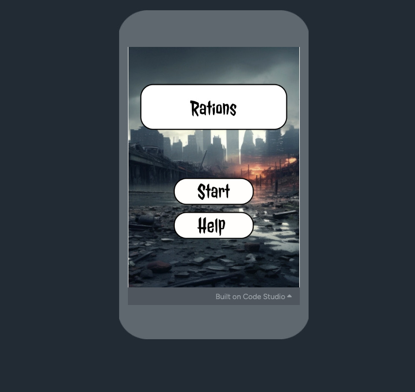
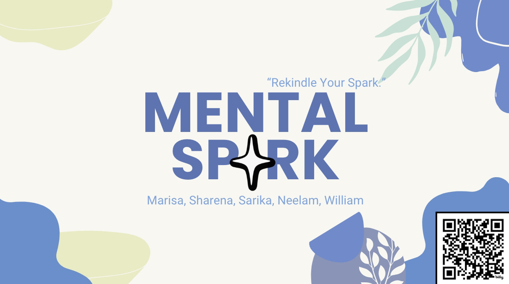

CFU'S
CFU'S were assignments that we did in class in order to understand how to learn python and use it.
G4C
Rations was a game that I created for the peaceformers challenge theme for the G4C competition. Rations takes place in an apocolyptic world where the users have to take care of their group by completing quests to obtain resources. Users will have to learn to keep the peace or else they can risk getting booted.
InfyApp
Rations was a game that I created for the peaceformers challenge theme for the G4C competition. Rations takes place in an apocolyptic world where the users have to take care of their group by completing quests to obtain resources. Users will have to learn to keep the peace or else they can risk getting booted.